Scene & plant dashboards
A web dashboard orchestrates every step — scale estimation, alignment, SAM3 masks, plant extraction, trait export — per scene and per plant, with status tracked in YAML.
[ dashboard walkthrough recording — coming ]
UAV video → 3D reconstruction → per-plant traits → time
A single hand-held or UAV video is reconstructed with Gaussian Splatting, separated into individual plants, measured organ by organ, and linked across capture days — turning routine greenhouse flights into longitudinal phenotypic records.
Pipeline
UAV or hand-held video sweeps along a crop row. AprilTags in the scene provide metric scale.
Frame selection → COLMAP/GLOMAP structure-from-motion → 3D Gaussian Splatting of the whole row.
SAM3 masks on the video frames are lifted into 3D to cut the scene into individual plants.
Plant height and span, then organ-level instance segmentation for leaf count, area and inclination.
Plants keep their identity across days, so every trait becomes a growth curve.
One plant, four representations
The same melon plant (row B, plant 01, DAT 24), rendered from an identical camera as it moves through the pipeline.
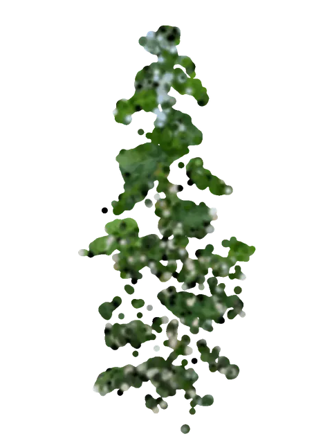
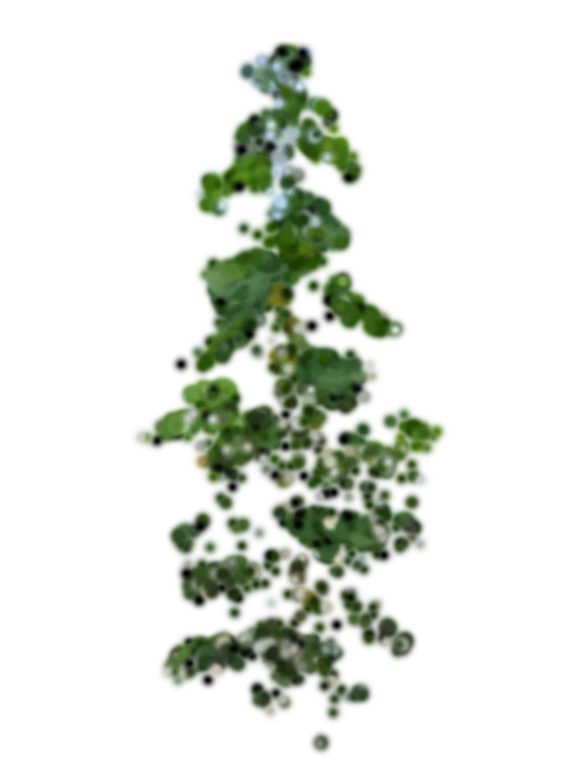
Triangulated feature points from the whole-row reconstruction, cropped to this plant. Sparse, but already metric.
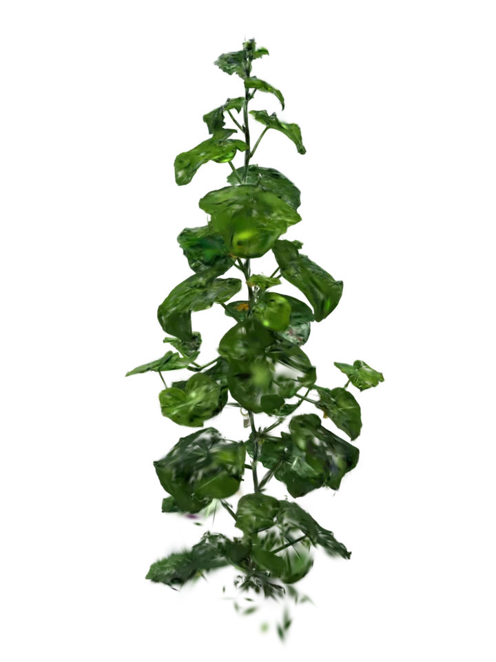
Photoreal radiance field trained on the selected frames; the per-plant splat after separation and refinement.
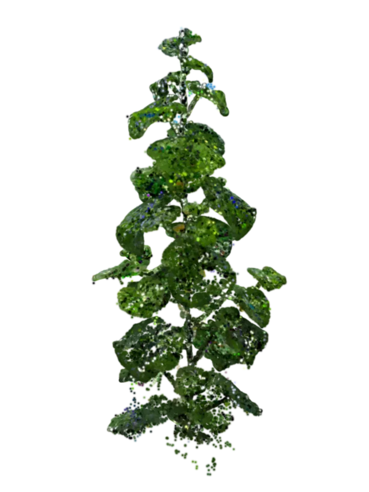
Gaussian centres exported as a coloured point cloud — the input for geometric trait extraction.
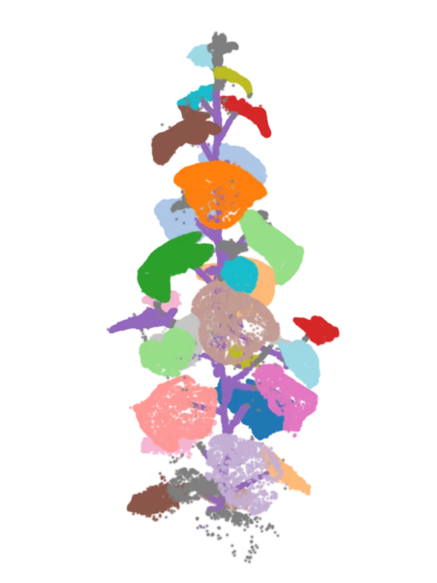
Point-Transformer-v3 instance segmentation labels every leaf and the stem — here 31 leaf instances.
Growth monitoring
Fixed metric camera, so what you see growing is real growth. Hover a card to spin the plant.
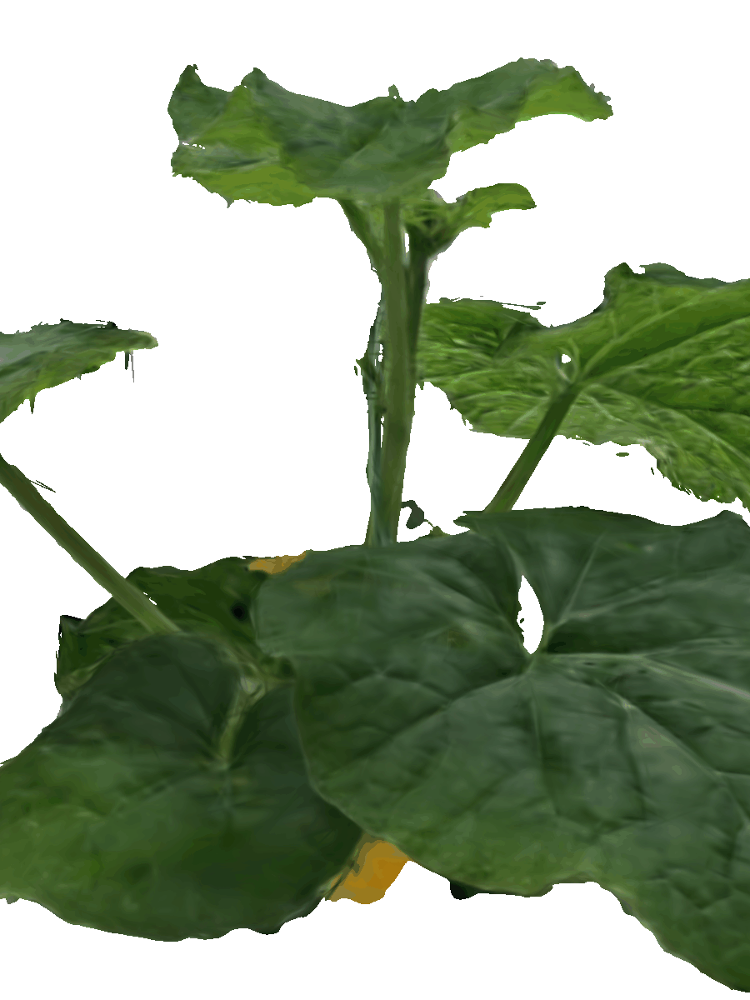
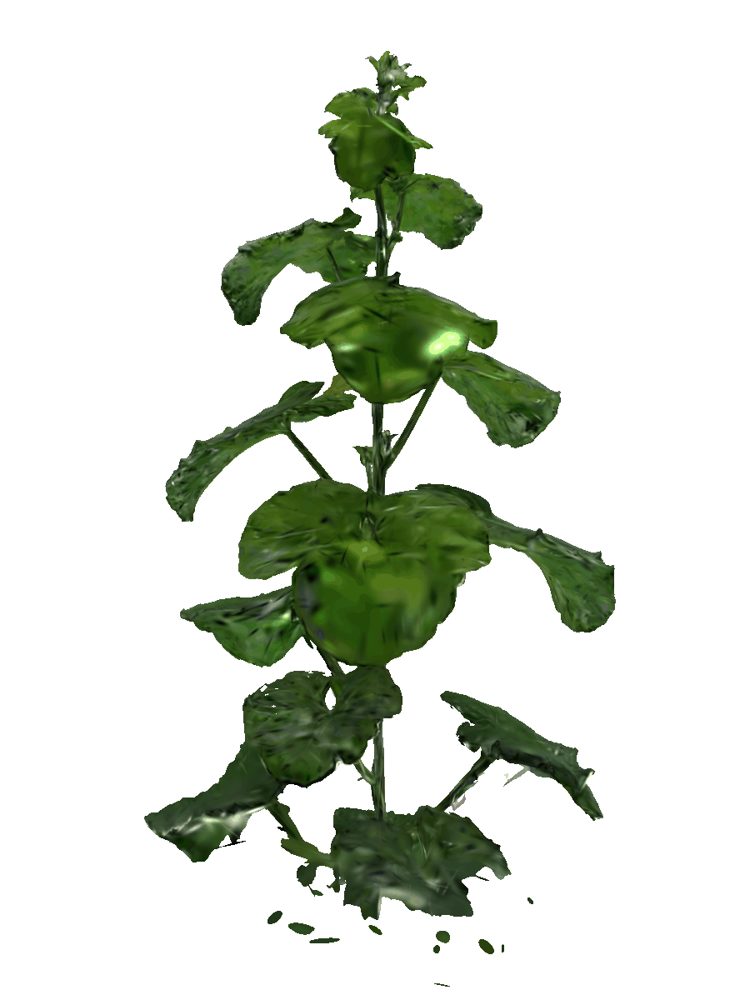
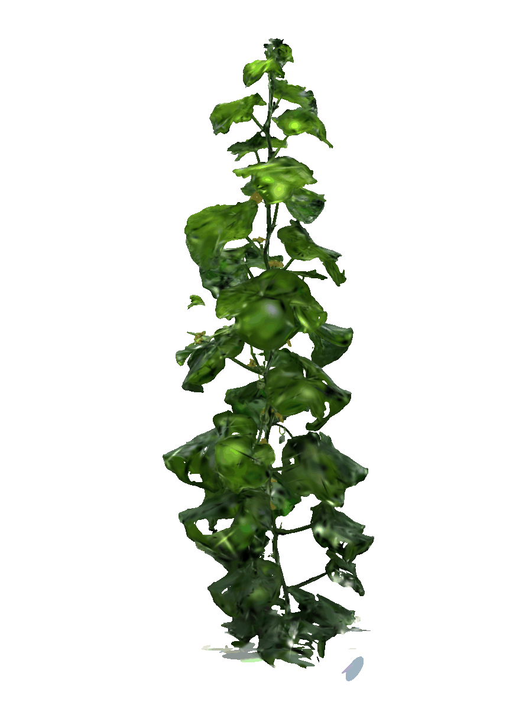
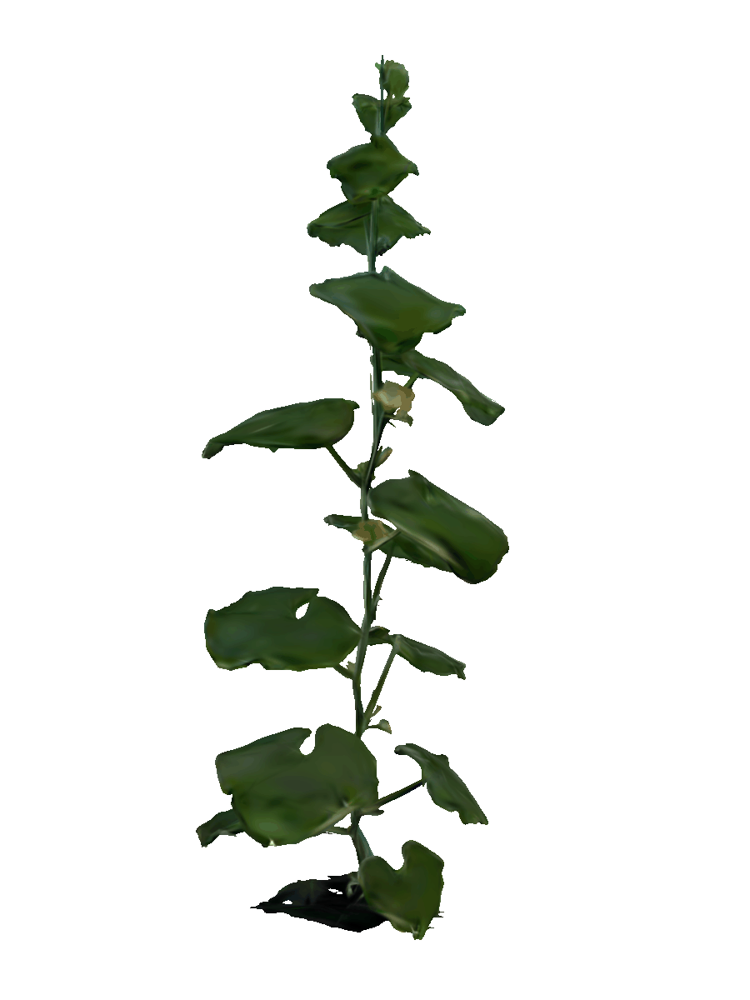
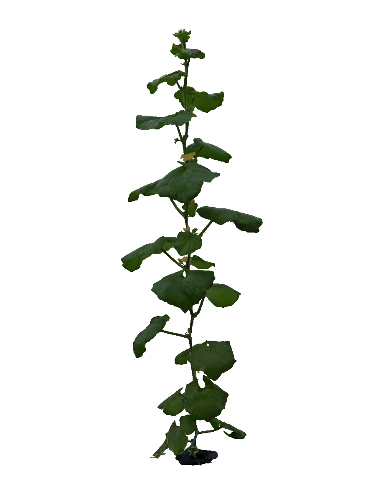
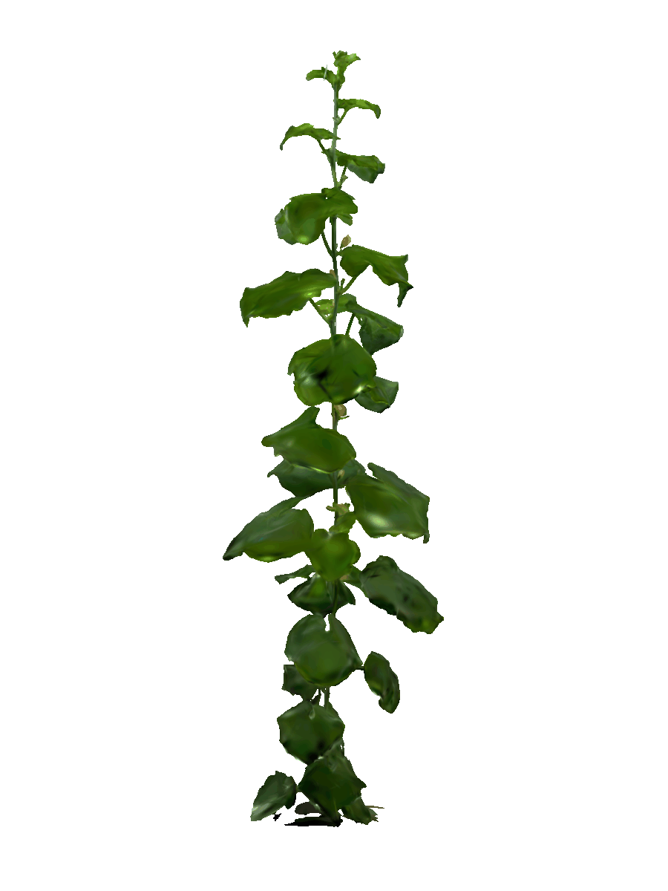
Heights shown are render extents from the AprilTag-scaled reconstruction (placeholder — will be replaced by measured plant-height traits).
Tooling
A web dashboard orchestrates every step — scale estimation, alignment, SAM3 masks, plant extraction, trait export — per scene and per plant, with status tracked in YAML.
[ dashboard walkthrough recording — coming ]
Cross-day leaf-rank, leaf-area and temporal-surface analysis, with interactive 3D plots.
[ interactive Plotly embed — coming ]
Pipeline code, GUIs and dashboards live in a public repository.
[ repo links — coming ]
About
[ author, lab, institution, thesis / paper links, contact — to fill in ]